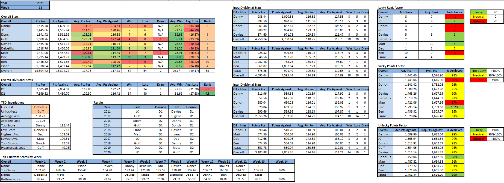

Power Rankings
WEEK 13 POWER RANKINGS
Positive
- Dac (-): In a defeat that no one saw coming, Dac lost by single digits to Ben and his league worst record. If anything, this was the result of bad luck more than any cause for concern. Dac scored 130, keeping his 10 game streak of scoring 125+ alive. Additionally, had Adam Thielen not had ankles built of the same wet bread as another Adam known to the league, he obviously would’ve had more than 0.5 points, and more than likely would’ve eclipsed the 9.2 total points needed to give Dac the win over Ben. In the end, it was a meaningless game, and Ben certainly needed the moral victory more than Dac, who has had the best overall record and bye locked up for over a month now and will steamroll his way to another fantasy championship.
- Debellis (+1): Debellis had a healthy 20 point victory over Matt this week, mainly thanks to 27 Javonte Williams points. Elijah Moore continued to shine with 18 points, but other than the two aforementioned players, it was another uninspiring Debellis performance. CEH, MAndrews, Claypool and Sutton all failed to reach double digits, and in his managerial prowess, Debellis subbed in 12 Derek Carr points for Jalen Hurts. With a playoff spot locked in, Debellis will finish the season off in a pointless game vs. Davies, just hoping to play spoiler in Davies’ bye week dreams.
- Donch (-1): Donch went from having the top score and doubling up his opponent last week to failing to break 100 for just the 2nd time all season and losing to Isaac’s underperformers. After an abysmal Thursday night where Dak only scored 13 points, Donch left the door open for Isaac’s playoff hopes because he’s such a nice guy. Despite having both 1A WRs in the battle of Metcalf/Lockett and Williams/Allen, Donch’s defeat came from the less than dozen total points he got from Kelce, Jrob, and Mooney. Scratch that. It was actually from starting Mooney over Dallas Goedert’s record day, a managerial move that cost Donch the game and potentially the D1 bye.
- Isaac (+1): Isaac somehow managed to secure his spot in the playoffs this week with a completely unexpected victory vs. Donch. Isaac made the big brain move to start the Colts D over Buffalo, which netted him an extra 19 points. In addition to that, over half of Isaac’s skill positions had a dozen or more points, with Mike Williams, James Connor, TJ Hockenson, and Josh Jacobs all topping projections. Luckily for Isaac, the game was more or less wrapped up by Monday night, as Josh Allen and Cole Beasley combining for 15 points did him no favors. After an injury plagued season, Isaac now gets to join the battle for 2nd place and sleep peacefully knowing he’s another year terd-free.
- Davies (-1): Davies failed to break 100 for his 4th time in 5 weeks on the back of a pathetic loss to the terd. With Isaac’s surprise victory over Donch, Davies just had to beat a terd to take sole possession atop D1. Instead, he started the wrong QB for the 12th time and had his RBs combine for <8 points. His other skill players weren’t much better, with Tyreek, Ertz, and Scary Terry teaming up for 8.4 points. A date with his D2 anemic offense twin, Debellis, is ahead in the final week of the season. With a victory and a little help, the D1 bye is amazingly still within reach.
- JC (-): After 5 straight weeks of scoring below 100, JC had his best game of the year, by a mile, vs. floundering Danny. Kyler Murray made his triumphant return with 35 points while Justin Jefferson added another 31 of his own. Everyone on JC’s team scored over a dozen, with the exception of Boston Scott, infamous for scoring tons of points on benches but none in starting lineups. This was a victory that simultaneously cemented JC’s spot in the playoffs and Danny’s in the dumps, although anyone could’ve predicted those outcomes before the season started.
- Matt (-): Matt saw his 4 game win streak and playoff hopes come to a screeching halt this week in a defeat to Debellis. Matt started the week off questioning which of his 5 cowboys to start, and in true dumps fashion, benched 2 of the top 3 scoring ones. It was a managerial nightmare of a week, as Matt made the wrong decision with every person on his bench. The pressure is now on, as Matt must somehow avoid his 3rd straight terd bowl while simultaneously being just a few days into fatherhood. No child deserves to have a terd father less than 1 month into life itself, so here’s to hoping Matt’s team isn’t as dumpy as Will’s diapers over the next couple weeks.
- Danny (-): In a must win game against a guy who hadn’t scored above 100 for 5 straight week, Danny choked so hard you’d have thought he was back at Stiletto’s. With a spot in the dumps on the line, Danny lost by 43 points, with only Tom Brady’s exceptional performance keeping it that close. After starting the season 4-3, Danny finished 1-6 (already counting week 14’s impending loss to Dac) averaging <100 points/week. Even by Danny’s low standards, this was a streak for the dumpy ages.
- Guff (-): In a game whose only significance was that it could slightly improve his chances of not being RST, Guff pulled off his 4th victory of the year and 4th victory thanks to JT. Once again, Mahomes failed to produce, as did Guff’s receivers. As usual, over 50% of Guff’s points came from RBs, with a significant amount of those coming from surprise of the week Sony Michel. This has been the season from hell for Guff, as the terd stench was able to infiltrate his being just as easily as the rona. Locked in the dumps, Guff now has to fend off becoming the RST and Re-terd in the next month, all the while being the terdiest of them all.
- Ben (-): Ben has sole possession of the league’s longest active winning streak (2) with this week’s victory over future 2021 champion, Dac. It was a game where Ben got back to his roots, leaning heavily on his 2013 strategy of dual tight ends. This week paid dividends as his two top scorers were his tight ends, combining for 55.8 points. After defeating COVID and Dac, Ben sets his sights on D1’s finest, Donch, in week 14. With a chance to play bye week spoiler and avoid RST, the sky (7th place) is the limit for Ben’s rejuvenated roster the rest of the year.
